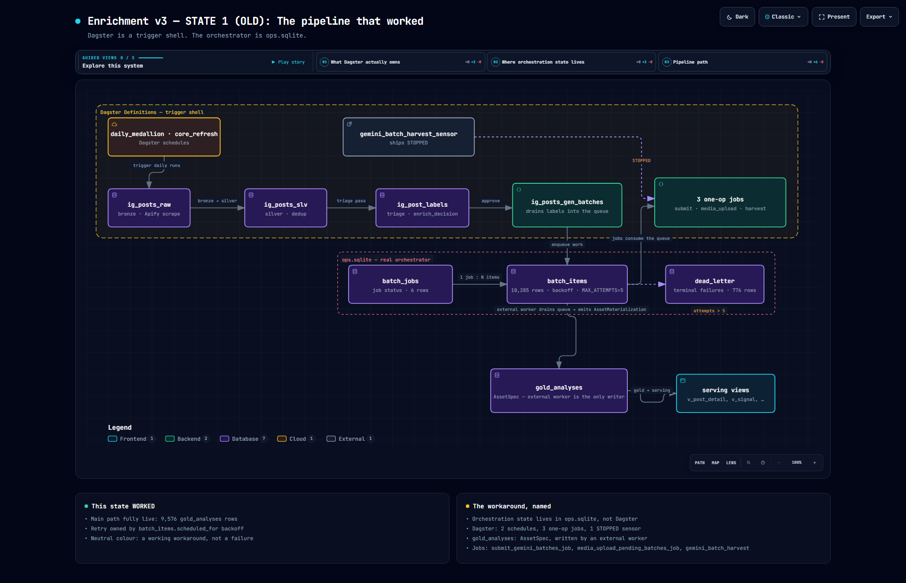
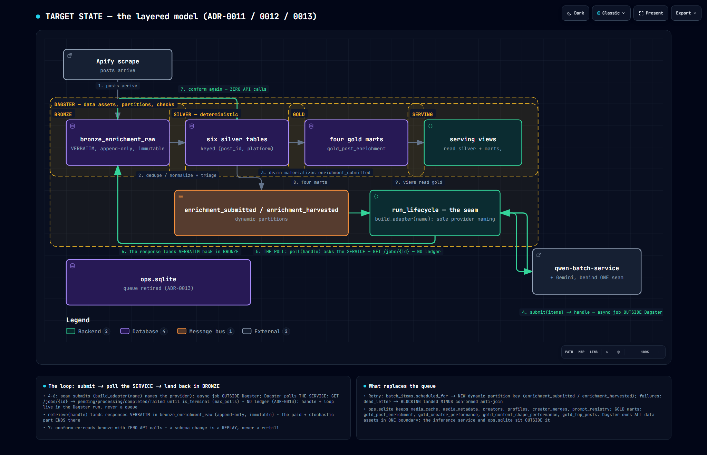
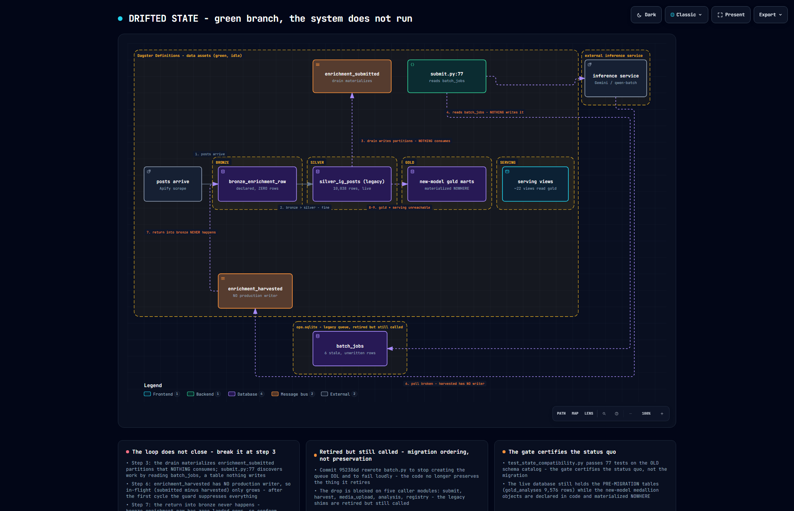

Post-mortem · datalake
Enrichment v3 migration
— post-mortem
Where the work went wrong, and what would have caught it.
7 of 36 exit criteria are met. The code branch is green. The system does not run.
Independent audit against the live database
Summary
The bottom line, first.
Plain statement A migration was planned in 7 phases. Subagents built each phase. Each phase reported complete. The test suite was green. An independent audit then checked each exit criterion against the live database, not against the branch.
12 objects exist as code only. Nothing materialized them in the live database.
The pipeline cannot complete one cycle.
Plain statement The cause is the process, not the workers. The plan divided the work by component. No unit owned the connections between components. Each worker did what its brief said. The briefs did not name the connections.
Figure 1. The 36 exit criteria, by audit outcome
The three states
Where we came from, where we were going, and where we actually went.

ops.sqlite drove everything: the scraper wrote bronze, silver deduped it, the
label pass decided what was worth enriching, and ig_posts_gen_batches enqueued
work that submit and harvest consumed. It produced real output — 9,576 rows in
gold_analyses, 205 in gold_growth_facets, 10,038
posts in silver, and the dashboard read it. Its limits are what motivated the migration:
Instagram-only, a hardcoded domain, media effectively text-only, and a bespoke
queue serving exactly one path.
→ diagrams/state1-old.html

build_adapter(name) is the single place a provider is ever named. Every model
response lands verbatim in bronze_enrichment_raw — the paid and
stochastic part ends there. Conform is a pure function of bronze with zero API calls,
so a schema change is a replay, never a re-bill. Six silver tables keyed
(post_id, platform) — never domain. Four gold marts that compose
the canonical metrics instead of re-deriving them. Orchestration moves into the Dagster
instance and the queue is retired.
→ diagrams/state3-target.html

enrichment_submitted partitions that nothing reads, while submit discovers work
by reading a batch_jobs table nothing writes. The producer is missing:
enrichment_harvested has no writer anywhere in src/, so the
in-flight set only grows and the guard suppresses everything after the first cycle. The
queue is retired but still called — _require_legacy_queue_tables raises
if the retired table is absent, and five modules still call those shims, so the drop is
blocked on caller migration rather than on intent. And the
seam is bypassed: one seam was built, one of four flows uses it, twelve call sites go
around it, and seam.run_lifecycle has zero production callers. The gate that
should have caught all of this passes — the schema catalog still lists
gold_analyses and never expected silver_content_classification, so
the readiness test certifies a world that no longer matches intent.
→ diagrams/state2-current.html
01Where it went wrong
Six concrete failures. Each one has a plain statement and a detail block.
3.1 Twelve objects exist only as code
Plain statement The migration created 12 new tables and views. None of them exists in the live database. The old tables are still the source of truth.
silver_content_classification, the five conform tables
(silver_visual_annotations, silver_visual_summaries,
silver_audio_transcripts, silver_text_annotations,
silver_text_summaries), silver_enrichment_quarantine,
silver_classification_incoming, and all four gold marts
(gold_post_enrichment, gold_creator_performance,
gold_content_shape_performance, gold_top_posts).The live
state.duckdb still holds gold_analyses (9,576 rows) and
gold_growth_facets (205 rows). The four gold marts are
CREATE OR REPLACE VIEW statements in code. They are not even tables.Figure 2. Declared in code vs present in the live state.duckdb
In code only — 12 objects, 0 rows
- silver_content_classification
- silver_visual_annotations
- silver_visual_summaries
- silver_audio_transcripts
- silver_text_annotations
- silver_text_summaries
- silver_enrichment_quarantine
- silver_classification_incoming
- gold_post_enrichment (view)
- gold_creator_performance (view)
- gold_content_shape_performance (view)
- gold_top_posts (view)
Live in state.duckdb — the old tables
- gold_analyses 9,576 rows
- gold_growth_facets 205 rows
The four gold marts are CREATE OR REPLACE VIEW statements in code. They are not even tables. The old tables are still the source of truth.
3.2 No view reads the new table
Plain statement The dashboard reads the old enrichment table. It has never read the new one.
silver_content_classification. Three views still read
gold_analyses. The live v_post_detail reads ga.result_json
and ga.prompt_hash directly. The silver-bound version of that view exists only
inside the serving/assets.py asset body, and it has never executed.3.3 No data ever landed in bronze
Plain statement The new bronze landing table is the foundation of the whole design. It has zero rows.
bronze_enrichment_raw has zero landed rows. Worse, the test mocks use a flat
envelope. The real provider responses nest. So the landing code has never met a real payload
shape. The first real run may fail on the real shape.Figure 3. Rows landed, by table
3.4 The conform layer has no caller
Plain statement The team built the layer that turns bronze into silver. Nothing calls it.
src/. The five silver tables exist only in test fixtures.3.5 The pipeline has two halves, and they do not touch
Plain statement One half writes work to a new place. The other half looks for work in the old place. So the pipeline runs once, then stops.
enrichment_submitted partitions
(instagram/assets.py:1289) that no consumer reads.
submit.py:77 discovers work by reading
batch_jobs, and nothing writes batch_jobs any more.
_require_legacy_queue_tables (batch.py:51)
even raises an error if that retired table is absent. The code actively preserves the dead
contract. Separately, enrichment_harvested has no production writer at all.
The in-flight set never shrinks, and the drain suppresses everything after the first run.Figure 4. Two halves that never meet
3.6 The seam is built but not used
Plain statement One phase created a single boundary for all external providers. Four production flows should use it. One does.
submit.py:152,
submit.py:170, eight sites in
harvest.py (311, 316, 319, 334, 446, 454, 459, 462),
facets_batch.py:318, and
facets_batch.py:322.
harvest.py never imports seam at all.
seam.run_lifecycle has zero production callers.The vacuous gate
Plain statement The team relied on one test to prove "no regression". That test cannot detect the failure. It asserts the old status quo.
tests/operational/test_state_compatibility.py passes with 77 tests. It passes
because the schema catalog still lists gold_analyses and does not expect
silver_content_classification. So the test asserts the status quo. It cannot
detect that the migration never happened.It also checks only that each view can be SELECT-ed. It never checks that the view DEFINITION is unchanged. So the criterion "19 transitive views are asserted, not assumed" has no assertion anywhere in the repository.
A gate gives evidence of the things it can assert. A gate that asserts the status quo cannot certify a migration.
02Root cause: the five whys
Each why is visible. The chain ends at the root cause.
-
Why 1 — Why are the two pipeline halves disconnected?
Each half implemented its own brief against the state in front of it. The drain writes to partitions.
submit.pyreads a table. No brief mentioned the other half. -
Why 2 — Why did no unit own the connection?
The plan divided the work by component. Integration was nobody's task. The plan knew the coupling: §4 names the drain as Phase 2's consumer, and Phase 2's text says the drain rewrite "must land with the queue retirement". But the retirement was in Phase 7, and no criterion in any phase said "submit consumes what the drain produces".
-
Why 3 — Why did phase verification accept this?
Each phase's test suite injects a fake on one side of every seam. The drain tests against a fake instance. The submit tests against a fake table. No test asserts a handoff between the two real halves.
-
Why 4 — Why did the exit criteria not force integration?
The criteria state that a component EXISTS. They do not state that data moves between components. "build_adapter is the ONLY place a provider is named" passes by unit-testing the registry, while 12 production sites bypass it. "Two drain runs enqueue no post twice" passes because run 2 enqueues nothing at all.
-
Root cause
The plan treated integration as a result that would appear by itself when all components were complete. Integration was not an owned, tested deliverable.
03Who is at fault, and who is not
"The subagents failed" is not accurate. Read the record.
Worker correct, interface defective
Plain statement In three cases, the workers did their briefs. The briefs did not name the connections.
max_tokens bypass. The seam's Item is per-item.
max_tokens is per-job. The worker could not express it.
The worker wrote the reason in a docstring.The
DRAIN_ATTEMPT_ROUND = 0 hardcode. The ADR mandates distinct retry
keys, but says nothing about the key shape. The worker implemented the guard honestly
for round 0.The missing
enrichment_harvested writer. The brief said "derive in-flight
from the instance". That is a guard instruction. No brief named the writer.Worker faults, both small
Plain statement Two cases are worker faults. Both are small.
DagsterInstance.get() fallbacks. The asset already accepted an injected
instance. The worker chose the permissive path.Silent failure paths.
classify_error sends unknown exceptions to
TERMINAL. Poll loops warn and continue with no bound. Asset checks pass on unread parquet.One claim was retracted. An earlier draft stated that no unit was ever briefed to migrate the seam call sites. That was an inference from the commit trail — which shows what was executed, not what was assigned. Presented as a dispatch record it was not evidence. The assignment-versus-execution question is undetermined on the current record, and the "worker correct" framing above rests partly on it.
And the root cause as stated does not discriminate. "Orchestration failed" describes every migration this process has run, including the ones that succeeded. A cause present in both outcomes explains neither. The discriminating form is the compound: unowned contracts AND no acceptance gate capable of observing a real run. Remove either half and the failure does not occur. That makes the proximate cause acceptance — the check that could not see the drift — rather than the shape of the dispatch.
04Lessons, in three layers
Juniors read the principles. Seniors use the checks. Each layer is separate.
01A contract between two components needs an owner.
a component is not done when it works alone. It is done when its caller uses it and its provider feeds it. The seam was built and 12 sites bypassed it.
name the production consumer of everything you write, and the production producer of everything you read. Write both names in the brief.
02Test the round trip, not the existence.
a test that asks "does this function exist" passes while the system is broken. A test that asks "does data arrive at the other end" fails when the system is broken. Every criterion here was an existence claim.
for every new component, add one test that runs producer and consumer against the same fake and asserts a non-empty handoff.
03A green gate is only evidence of what it asserts.
know what your gate cannot see. test_state_compatibility.py asserted the status quo.
for each gate, write the sentence "this gate cannot detect X". If X is a real risk, the gate is wrong.
04Delete what you replace, in the same change.
a retired path that still exists will be used. The queue's DDL stopped being created, but five modules kept calling its shims — so the retired queue stayed a hard runtime dependency and could not be dropped. Retirement that stops at the writer is not retirement.
make "delete everything you supersede" an explicit item in the brief and the acceptance.
05Do not defer retirement to a later phase than the rewiring.
if phase N stops writing to a store, phase N must also move the readers. The drain was rewired in Phase 2; the queue retirement was in Phase 7.
for each phase, list the producers and the consumers of every store it touches.
06An abstraction that only one caller uses is not adopted.
adoption is a count, not a design. Seam adoption was 1 of 4 flows.
express adoption criteria as a count or a grep test, never as "the abstraction exists".
07Every mechanism needs a driver.
a retry, a quarantine, a reconciliation must name the actor and the trigger. A mechanism with no driver never runs. Retry, quarantine, and the harvested writer all had no actor.
for each mechanism, write "who calls this, and when".
08Fail loudly, and bound every loop.
a silent default turns a small error into permanent bad data. classify_error sent unknown exceptions to TERMINAL. Poll loops had no bound.
each error path names its behaviour for an unknown error, and each loop names its exit.
09Keep dependencies pointing inward.
a shared module must not import from one of its consumers. adapters.py imported GeminiTierConfig from the Instagram module.
list every import that leaves your assigned slice. Flag each one.
10Verify against the real artifact, not the test double.
a mock encodes your assumptions. Real data does not. The mocks were flat; the real envelopes nest.
before you trust a module, run it once on one real payload.
01A schema change is a contract change.
name the contract and the requirement before you change it. gold_content_shape_performance dropped platform from its grain.
for each schema change, list every consumer and say how you refresh it.
02A migration is not done until it runs against the live store.
code that defines a table is not a table. 12 objects were defined and never materialized.
the acceptance query is SELECT count(*) FROM <new object> against the real database. A code search is not evidence.
03Never drop or replace a live table without a backup and a review.
read every migration before you run it. This repository lost 391 real rows to a DROP TABLE in a numbered migration.
additive DDL only in numbered migrations. A drop needs its own reviewed step.
04Keep the schema catalog in step with the migration.
if the catalog still describes the old world, the compatibility test proves nothing. The catalog still lists gold_analyses. That made the gate vacuous.
update the catalog in the same commit as the schema change.
05Every derived layer needs provenance.
a derived value must record what made it, from what, with which logic, and when. The design says this. The implementation has no materialized derived layer at all.
06Raw data is immutable.
never rewrite what the source sent. Conform it later. The design is correct on this point: bronze keeps the verbatim response. The code is right; the data is absent.
07A key must be unique at the grain you claim.
check the grain against every dimension the data carries. A mart keyed by (domain, topic, follower_tier, facet_name, facet_value) dropped platform, though the source carries it. Cross-platform rows would merge.
08Quarantine needs a consumer.
a dead-letter table that nothing reads is a log, not a control. silver_enrichment_quarantine has no reader and no check on its growth.
for every quarantine, name the alert or the query that reads it.
09Version the derivation.
when logic changes, old rows must be detectable as old. The prompt hash is versioned correctly. That part is a good example to cite.
01Declare dependencies. Do not hope for order.
each asset states its inputs and its outputs. No criterion connected the drain's output to submit's input.
02Write, audit, then publish.
write to a place no consumer reads. Check it against the quality contract. Then swap it in. Objects were defined and treated as done before any check ran on real data.
03Prove idempotency by running twice and comparing.
a second run must produce the same state, not a duplicate and not a stall. The "no post twice" test passed because run 2 suppressed everything. The real system stalls after one cycle.
04A guard must tell a dormant source from a broken one.
a quiet source is either retired or dead. The system must know which. The in-flight set grows and never shrinks. The system cannot tell "all work finished" from "nothing is running".
05Every pipeline needs an end-to-end smoke run on real data before you call it finished.
one real item through the whole path. Zero bronze rows landed. The path never ran end to end.
06Check the freshness and the volume of each layer, not only its existence.
a layer with zero rows is not a healthy layer. The audits asked "exists and populated / exists and empty / code only". That three-way question is the check.
07Instrument the boundary.
a guarantee you cannot observe is not a guarantee. The accounting identity exists and is good. Use it as the example of correct design.
05Harness fixes
Read this first. The config already says most of what follows. The problem is that the rules did not bind.
The rules were not missing. They were not binding.
Plain statement
The dlc-worker config already orders the blast-radius list, the consumer
check, the fresh review, the producer guardrail, and "never trust a self-report". The
migration ran under that config and failed anyway.
A lesson in a file that is not loaded during work is a record, not a control. Promote it to a hook or a failing test, or it will not bind.
Add a contract-inventory step to the dispatch, before any code. The dispatcher lists every producer and every consumer that the unit touches. Any connection with no owner becomes its own unit.
the disconnected halves
Add a mandatory "consumer/producer" line to the unit brief. The brief must state: "You write to X. Who reads X? You read Y. Who writes Y?"
the missing
enrichment_harvestedwriterChange the acceptance from existence to round trip. The worker must show data arriving at the other end, not a function existing.
the 12 bypass sites, the unadopted seam
Make "delete what you supersede" an explicit deliverable in every unit.
the preserved dead queue contract
Add a mandatory real-data smoke step. One real item end to end before the unit is done.
the zero bronze rows and the flat-mock / nested-real mismatch
Require the worker to report what it could NOT see. The worker names the callers it does not control. The dispatcher assigns those to another unit.
the unassigned call-site migration
Give the worker a budget and a bounded retry. Three attempts, then escalate.
Add a
migration-verificationskill. It carries the four round-trip assertions: handle round trip with a multi-chunk case, partition-key round trip, seam adoption through the production entry point, and a grep test for bypasses.Add a
contract-mappingskill. It gives a repeatable method to list producers, consumers, and owners for a change.Add a
schema-migrationskill that encodes the datalake rules. Additive DDL only. Read every migration before you run it. Back up before a drop. Update the schema catalog in the same commit.Extend the existing verification skill with the "could this test fail?" question. The reviewer must write one sentence that says what bug the test would catch. If there is no such bug, the test is vacuous.
A rule that a gate must declare what it cannot detect. Each gate states the failures it is blind to.
A rule that existence is never acceptance. An acceptance criterion phrased as "X exists" or "X is the only place" must be paired with an adoption assertion.
A rule that integration is an owned deliverable. Every multi-unit plan names the units that own each seam, or states that a seam has no owner and why.
A rule that a mechanism names its driver. Retry, quarantine, reconciliation, and cleanup each name the actor and the trigger.
A rule that a phase must not defer retirement of a store that it stops writing to. The readers move in the same phase.
A rule for layering. A shared module must not import from a consumer module.
A rule that the raw data is immutable and the derived data carries provenance.
A pre-commit or CI hook that greps for provider names outside the adapter modules.
gemini_batch.andqwen_client.may appear only in the adapter files. This is a mechanical check; it catches every bypass.A hook that fails the build when a schema catalog and the live database disagree. The catalog must expect the new objects and must not expect the retired ones.
A hook that fails when a defined table is never materialized. A code-only object is a failure, not a warning.
A hook that checks the grain of every new key against the dimensions the data carries.
A hook that reports the count of rows in every new object. Zero rows blocks the merge.
A hook that runs the views' definitions as a diff. Assert the definition equals the expected text, not only that the view can be selected.
A hook that parses the CSS custom properties of every report and fails if any text colour is below 4.5:1 against its background. This page shipped with three such bugs: an undefined colour variable, a malformed rule block, and two low-contrast colours. The worker reported that visual QA passed. The verifier could not see the page. A contrast assertion catches all three.
06Evidence appendix
Open these files for the full detail.
- docs/postmortem/enrichment-v3/postmortem.mdthe root-cause analysis (515 lines, incl. the panel corrections)
- docs/postmortem/enrichment-v3/audits/p1-p2.md18 criteria, phases 1-2
- docs/postmortem/enrichment-v3/audits/p3-p4.md8 criteria, phases 3-4
- docs/postmortem/enrichment-v3/audits/p5-p6.md10 criteria, phases 5-6
- docs/postmortem/enrichment-v3/reviews/architecture-soundness.md
- docs/postmortem/enrichment-v3/reviews/interfaces.md
- docs/postmortem/enrichment-v3/reviews/round-semantics.md
- docs/postmortem/enrichment-v3/panel/software.mdpanel: overstatement and missed patterns
- docs/postmortem/enrichment-v3/panel/data.mdpanel: "unfair as stated" — ADR-0012 is underspecified
- docs/postmortem/enrichment-v3/panel/process.mdpanel: the proximate cause is acceptance
- docs/postmortem/enrichment-v3/panel/adversary.mdpanel: the discriminating-vs-non-discriminating test
- docs/postmortem/enrichment-v3/analysis/learnings-mece.mdthe five MECE controls — read this one next
- docs/postmortem/enrichment-v3/analysis/harness-coverage-and-hooks.mdrule-vs-hook coverage per agent
- docs/postmortem/enrichment-v3/plans/agent-improvement-plan.mdchanges to the agents
- docs/postmortem/enrichment-v3/plans/remediation-plan.md10 units, the fix
- docs/postmortem/enrichment-v3/diagrams/state1-old.htmlstate 1, drawn — the pipeline that worked
- docs/postmortem/enrichment-v3/diagrams/state3-target.htmlstate 3, drawn — the target model
- docs/postmortem/enrichment-v3/diagrams/state2-current.htmlstate 2, drawn — the failure
- tasks/plans/enrichment-v3-migration-master.mdthe plan